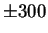
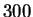
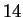
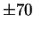
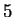
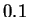
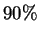
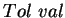
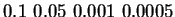

Figures 3.4 and 3.5 show the Calculation Parameter Window for the auditory example and the visual example. There are two calculation parameters required for STRFPAK: TimeLag and Tolerance value. By clicking the TimeLag or Tolerance value button, a small information window will show up to explain the meaning and the format for the input text field. The TimeLag is a time-lag used for computing the stimulus auto-correlation and the stimulus-response cross correlation. For example, since the bin size for the above auditory data is ms, the time course covers a period of  ms if we set TimeLag as . For the visual example, the bin size is  ms, the time course covers a period of  ms if we set TimeLag as . If the larger range is needed, TimeLag is needed to be larger value.
Tolerance value is a list of real values used to select eigenvalue cutoff for pseudo-inverse of the stimulus auto-correlation matrix. Its value should be less than . For example, if Tolerance value is , that means top  eigenvalues are used for calculating inverse of the auto-correlation matrix. The Tolerance value is usually set as a list of values to check the sensitivity of the final results to the tolerance values. In the above examples, we have set  as .